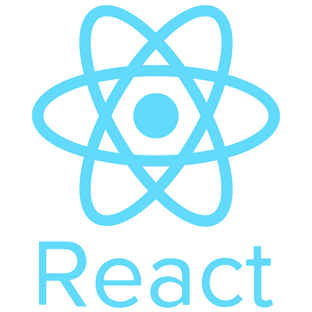

Olá, eu sou
Eduardo Henrique
Desenvolvedor Front-end & Back-end | Em busca de experiências
Ver ProjetosSobre Mim
Tenho 21 anos, moro em Jacareí (SP) e sou estudante de Desenvolvimento de Software Multiplataforma na FATEC, onde tive meu primeiro contato com programação em 2024. Desde então, venho explorando tecnologias web com foco em experiências intuitivas e funcionais.
Habilidades

ReactProjetos
HypoHealth 🩺
Ver Repositório
O HypoHealth é um sistema inteligente de gerenciamento e dispensação de medicamentos que integra IoT e uma aplicação móvel. O projeto auxilia no controle de tratamentos, garantindo segurança na administração de medicamentos e monitoramento remoto em tempo real.
Tecnologias: ESP32, Node.js, TypeScript, PostgreSQL, MQTT e Docker
HypoOrbit 🛰️
Ver Repositório
O HypoOrbit é uma aplicação web para visualização e comparação de dados geoespaciais provenientes de diferentes satélites. A plataforma centraliza informações ambientais como NDVI, EVI, temperatura da superfície e umidade do solo em mapas interativos e comparações temporais.
Tecnologias: React, TypeScript, Node.js e MongoDB.
HypoHeat 🔥
Ver RepositórioO HypoHeat é uma aplicação web que fornece acesso visual a dados do Programa Queimadas do INPE. A plataforma permite consultar focos de calor, áreas queimadas e risco de fogo em tempo real, utilizando filtros e visualizações interativas para facilitar a análise de dados ambientais.
Tecnologias: React, TypeScript e CSS
HypoScrum 💻
Ver RepositórioO HypoScrum é uma plataforma educativa voltada para o aprendizado de Scrum. O projeto oferece aulas introdutórias, avaliações interativas e geração de certificados em uma interface responsiva e intuitiva.
Tecnologias: HTML, CSS e JavaScript.
Contato
Email: eduardohenriquealvess@arantes.com
LinkedIn: linkedin.com/in/eduardo-henrique-87951129a
GitHub: github.com/eduardohalves